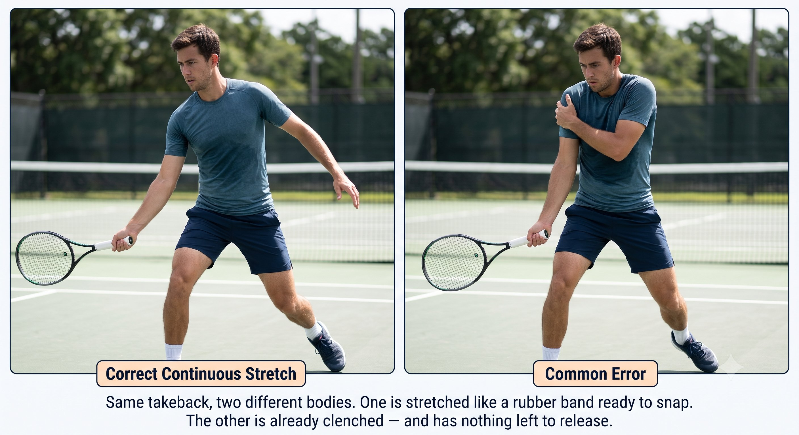
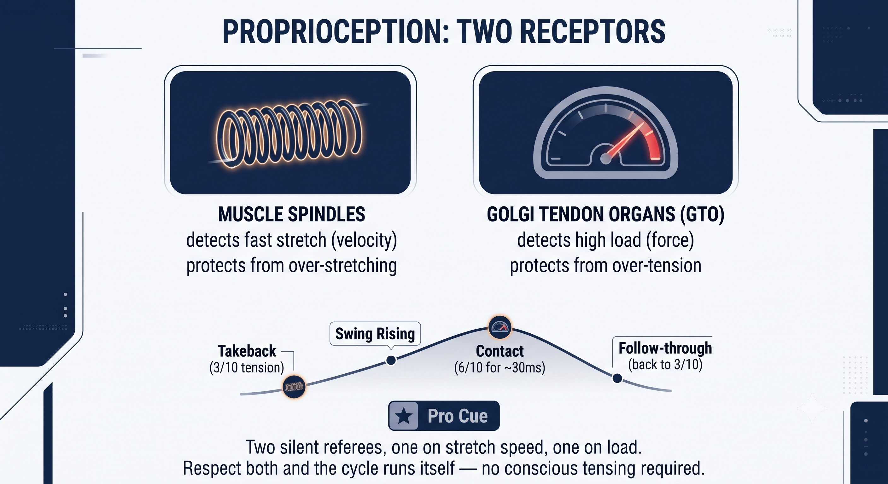

Chương 10: Fascia Và Bản Thể Cảm¶
FASCIA & BẢN THỂ CẢM¶
Phần Cứng Sinh Học (F, P)¶
Cơ bắp không phải thứ di chuyển bạn. Fascia và bản thể cảm mới là thứ làm việc đó — cơ bắp chỉ là những động cơ được khâu bên trong bộ đồ bơi fascia.
Fascia là mạng lưới collagen liên tục bao bọc quanh mọi thớ cơ và nối cơ này với cơ kia. Nó có hai đặc tính mà cơ bắp không có: lưu trữ đàn hồi và truyền lực qua khớp.
— Henry Phạm

Hình 10.1
Fascia: Hệ Truyền Lực, Không Phải Động Cơ¶
Fascia có hai đặc tính mà mô cơ đơn thuần không thể có được:
– Lưu trữ đàn hồi: nó hoạt động như một dây thun. Kéo căng nó chậm rãi trong lúc Kéo vợt ra sau, nó sẽ bật trở lại hoàn toàn miễn phí — không tốn thêm chút năng lượng nào.
– Truyền lực qua khớp: chân sau của bạn có thể tạo lực căng lên vai đối diện chỉ nhờ fascia. Cơ bắp không làm được điều đó — chúng chỉ kéo được khớp mà chúng thực sự bắc qua.
Nguyên Lý Cốt Lõi¶
Độ dài của Kéo vợt ra sau chưa bao giờ là chuyện vợt lùi bao xa. Đó là chuyện bạn tạo ra bao nhiêu độ căng fascia mà không làm gãy tính liên tục của độ căng đó.

Hình 10.2
Hai Đường Fascia Quan Trọng Cho Quần Vợt¶
A. Đường Xoắn Ốc (Spiral Line) — Cho Cú Forehand Push Của Bạn¶
Đường đi: vòm trong của bàn chân sau, lên mặt trong đùi, băng qua bụng, vào cơ chéo bụng đối diện, lên qua ngực, băng qua vai, xuống cẳng tay, vào lòng bàn tay.
– Đây là đường push của bạn. Thực hiện đúng, vòm bàn chân sau nạp lực, hông xoay, cơ chéo bụng căng, ngực căng, và lòng bàn tay thực hiện cú đẩy.
– Bạn nên cảm nhận được một đường căng liên tục từ bàn chân sau đến ngực trong lúc Kéo vợt ra sau — chứ không chỉ là một cánh tay đặt phía sau lưng.
– Nếu tay bạn siết chặt, đường căng này sẽ gãy ngay tại vai. Sức mạnh từ ngực không bao giờ đến được tay, nên bạn sẽ phải gồng cẳng tay để tự đánh — và đó chính xác là nguyên nhân gây ra đau khuỷu tay.

Hình 10.3
B. Đường Lưng Chức Năng Cộng Đường Tay (Functional Back Line + Arm Line) — Cho Backhand Saber Của Bạn
Đường đi: bàn chân sau, lên gân kheo, qua mông, băng qua lưng dưới, vào cơ lưng xô (lat) đối diện, qua vai, xuống cơ tam đầu, dọc theo cạnh ngoài cẳng tay, vào bên ngón út của bàn tay.
– Đây là đường saber của bạn. Rút "gươm" sẽ nạp lực cho chân sau và cơ lưng xô với khuỷu tay giữ cao, và bạn nên cảm nhận một đường căng chạy từ hông đến lưng xô đến khuỷu tay.
– Bản thân pha rơi vợt đến từ trọng lực cộng với sự phản hồi của fascia, không phải từ một cú đẩy của cơ tam đầu. Cạnh vợt dẫn đầu vì đường fascia đang kéo từ lưng xô, chứ không phải bị đẩy từ bàn tay.
– Nếu bạn siết tay quá sớm, bạn sẽ làm gãy đường căng ngay tại cổ tay và mất hoàn toàn cái bật đàn hồi đó.
Nguyên Lý Cốt Lõi¶
Độ dài của Kéo vợt ra sau chưa bao giờ là chuyện vợt lùi bao xa. Đó là chuyện bạn tạo ra bao nhiêu độ căng fascia mà không làm gãy tính liên tục của độ căng đó.
Bản Thể Cảm: Hệ GPS Nội Tại Của Bạn¶
Bản thể cảm là cảm giác của cơ thể về vị trí của chính nó mà không cần nhìn — được xây dựng từ thoi cơ (cảm nhận độ căng), cơ quan Golgi ở gân (cảm nhận tải trọng), thụ thể khớp, và các thụ thể cơ học trong fascia.
Quiet Eye cho bạn một mục tiêu bên ngoài. Bản thể cảm cho bạn một mục tiêu bên trong: tay bạn đang ở đâu so với cơ thể, và điểm tiếp xúc đang nằm ở đâu so với ngực.
Bản thể cảm kém buộc bạn phải nhìn vào cây vợt để biết nó ở đâu — điều này giết chết Quiet Eye ngay lập tức. Bản thể cảm tốt cho phép bạn nhìn chằm chằm vào vùng tiếp xúc trống và đơn giản là cảm nhận cây vợt đang đến.
Hai Thụ Thể Kiểm Soát Mẫu Hình Căng Cơ Của Bạn¶
Chu kỳ căng cơ lỏng-chặt-lỏng từ các chương trước thực chất là một cuộc thương lượng giữa hai thụ thể này:
Chu kỳ bốn nhịp diễn ra như sau:
– Vung nạp lỏng ở mức 3/10: thoi cơ chấp nhận độ căng chậm, cơ quan Golgi vẫn im lặng, và đường fascia căng ra liên tục.
– Vung tiến: độ căng của thoi cơ tăng lên, nhưng trong tầm kiểm soát, nên không có sự siết chặt bảo vệ nào xảy ra.
– Tiếp xúc: chắc lên mức 6/10 trong khoảng 30 mili-giây — tải trọng tăng vọt nhưng đủ ngắn để cơ quan Golgi không kịp ức chế.
– Follow-through: hạ ngay lập tức về 3/10, và cả hai hệ thụ thể đều reset lại cho cú đánh tiếp theo.

Hình 10.4
VOR, Fascia, và Bản Thể Cảm Kết Nối Ra Sao — Toàn Bộ Chuỗi Hệ Thống¶
Ghép lại với nhau, đây là hệ thống con người hoàn chỉnh đứng sau mọi cú đánh:
Nếu bất kỳ mắt xích nào trong chuỗi đó bị nhiễu, não sẽ bù trừ bằng cách tăng cường co-cứng cơ — và bạn sẽ cảm thấy chặt, chậm, và muộn.
Cách Huấn Luyện Fascia và Bản Thể Cảm¶
Tập tạ ở phòng gym thông thường không huấn luyện được fascia. Bạn huấn luyện nó bằng các bài căng-nạp-rồi-bật, và bằng những bài tập nhận thức chậm rãi, có chủ đích.
Cho Độ Đàn Hồi Của Fascia:

Hình 10.5
– Không dừng ở cuối Kéo vợt ra sau: độ căng phải chảy thẳng vào vung tiến. Nếu bạn dừng lại, năng lượng đàn hồi sẽ tiêu tán thành nhiệt chỉ trong khoảng một giây — đó chính xác là lý do vì sao một cú Kéo vợt ra sau theo vòng lặp liên tục tạo ra công suất nhẹ nhàng, còn một cú Kéo vợt ra sau giật cục thì không.
– Nạp ngược trước: trước cú push forehand, để ngực mở nhẹ trước khi tay tiến lên. Trước cú saber backhand, để hông xoay nhẹ về phía trước trong khi vợt vẫn đang lùi. Sự nạp ngược này nạp lực cho đường xoắn ốc và đường lưng.
– Căng dọc trục dài giữa các điểm: đừng chỉ lắc cánh tay. Hãy làm một bài căng toàn chuỗi — ấn bàn chân sau xuống mặt sân, vươn bàn tay ra xa — và cảm nhận một đường dài liền mạch từ chân đến tay.
Cho Bản Thể Cảm:
– Shadow swing với mắt nhắm: thực hiện các cú shadow push và saber với mắt nhắm lại. Bạn có cảm nhận được mặt vợt đang hướng về đâu mà không cần nhìn không? Nếu không, bản thể cảm của bạn đang dựa dẫm vào thị giác để làm việc đó.
– Cân bằng chân trần cộng vung nhỏ: trên sân, chân trần, thực hiện các cú vung nhỏ và cảm nhận sự kết nối từ vòm chân trong đến lòng bàn tay. Giày làm giảm cảm nhận bản thể từ bàn chân — nơi khởi động đường xoắn ốc.
– Giữ tiếp xúc theo chuyển động chậm: dùng trọn 10 giây để đi từ Kéo vợt ra sau đến vị trí tiếp xúc đóng băng, mắt đã đỗ. Cảm nhận từng centimet căng fascia đang xây dựng. Bài này huấn luyện thoi cơ chấp nhận độ căng mà không kích hoạt.
Quy Tắc¶
Vung nạp chưa bao giờ là chuyện vợt lùi bao xa. Đó là chuyện bạn tạo ra bao nhiêu độ căng fascia mà không làm gãy tính liên tục của độ căng đó.
Toàn Bộ Chuỗi: Q-V-F-P-CORE¶
VOR giữ bật để đến nơi trong trạng thái cân bằng. Đầu bất động làm VOR lặng đi. Quiet Eye đỗ vào điểm bên ngoài. Bản thể cảm cảm nhận vị trí bên trong so với điểm đó. Fascia, được nạp trong lúc Kéo vợt ra sau, lưu trữ năng lượng. Mẫu hình căng cơ cho phép một cú bật sạch sẽ. Cầm vợt và tiếp xúc trao ra mặt vợt mà vị trí sân và độ cao bóng đòi hỏi. Và cảm giác push hay saber truyền qua chính đường fascia bạn đã xây dựng.
Khi mọi thứ vận hành đúng, bạn không cảm thấy nỗ lực cơ bắp. Thay vào đó, bạn cảm thấy:
– Forehand: một độ căng từ chân đến lòng bàn tay, rồi giải phóng, lòng bàn tay đẩy xuyên qua bóng trong khi mắt vẫn đỗ.
– Backhand: một độ căng từ hông đến lưng xô đến khuỷu tay, rồi cạnh vợt cắt xuống xuyên qua bóng trong khi đầu vẫn giữ nghiêng bên.
Công suất không tốn sức không có nghĩa là ít nỗ lực hơn. Đó là nỗ lực được chuyển hướng vào đúng loại mô — fascia và sự bật đàn hồi — thay vì vào bắp tay và cẳng tay.
Chương Này Dẫn Đến Đâu¶
Chương này thiết lập F và P — fascia và bản thể cảm — như phần cứng sinh học trong hệ thống Q-V-ROOT-8-45-Impulse. Chương 11 bao quát T — tensegrity — như nguyên lý cấu trúc giữ toàn bộ phần cứng này lại với nhau. Chương 12 bao quát chu kỳ căng-rút như động cơ mà nó vận hành. Các Chương 19 đến 21 sẽ quay lại với fascia và bản thể cảm cùng danh sách quét cơ thể đầy đủ, được xây dựng riêng cho cú push forehand và cú saber backhand.
←Chương TrướcChương 9: Ổn Định Tiền ĐìnhChương TiếpChương 11: Tensegrity→